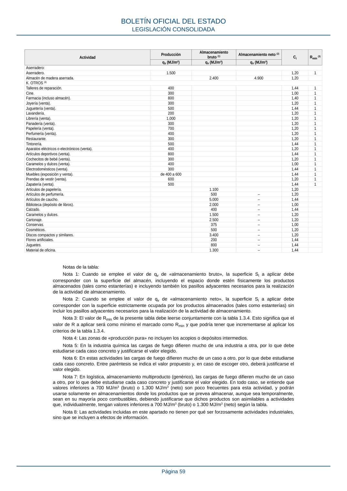

RSCIEI · edición 2025-04-10 · capa asociada
Documento RSCIEI-asociada · SHA-256 del PDF 85aa0af25d51e5b58d8975a4eefbf76d3f57a8933445cfe814ae9c4818a2e3e7
Página física 59 de 108.
Copia fiel del PDF fuente · Fuente oficial
Ficha de la disposición en la fuente oficial
Texto extraído y reorganizado: Basado en datos de la Agencia Estatal Boletín Oficial del Estado. PDF reproducido: Fuente de los datos: Agencia Estatal Boletín Oficial del Estado.
Formato: Texto de la página (Markdown)
Actividad Producción Almacenamiento bruto (1) Almacenamiento neto (2) Ci Rmin (3) qs (MJ/m²) qv (MJ/m³) qv (MJ/m³) Aserradero: Aserradero. 1.500 1,20 1 Almacén de madera aserrada. 2.400 4.900 1,20 K. OTROS (8) Talleres de reparación. 400 1,44 1 Cine. 300 1,00 1 Farmacia (incluso almacén). 800 1,40 1 Joyería (venta). 300 1,20 1 Juguetería (venta). 500 1,44 1 Lavandería. 200 1,20 1 Librería (venta). 1.000 1,20 1 Panadería (venta). 300 1,20 1 Papelería (venta). 700 1,20 1 Perfumería (venta). 400 1,20 1 Restaurante. 300 1,20 1 Tintorería. 500 1,44 1 Aparatos eléctricos o electrónicos (venta). 400 1,20 1 Artículos deportivos (venta). 800 1,44 1 Cochecitos de bebé (venta). 300 1,20 1 Caramelos y dulces (venta). 400 1,00 1 Electrodomésticos (venta). 300 1,44 1 Muebles (exposición y venta). de 400 a 600 1,44 1 Prendas de vestir (venta). 600 1,20 1 Zapatería (venta). 500 1,44 1 Artículos de papelería. 1.100 1,20 Artículos de perfumería. 500 – 1,20 Artículos de caucho. 5.000 – 1,44 Biblioteca (depósito de libros). 2.000 – 1,00 Calzado. 400 – 1,44 Caramelos y dulces. 1.500 – 1,20 Cartonaje. 2.500 – 1,20 Conservas. 375 – 1,00 Cosméticos. 500 – 1,20 Discos compactos y similares. 3.400 – 1,20 Flores artificiales. 200 – 1,44 Juguetes. 800 – 1,44 Material de oficina. 1.300 – 1,44 Notas de la tabla: Nota 1: Cuando se emplee el valor de qv de «almacenamiento bruto», la superficie Si a aplicar debe corresponder con la superficie del almacén, incluyendo el espacio donde estén físicamente los productos almacenados (tales como estanterías) e incluyendo también los pasillos adyacentes necesarios para la realización de la actividad de almacenamiento. Nota 2: Cuando se emplee el valor de qv de «almacenamiento neto», la superficie Si a aplicar debe corresponder con la superficie estrictamente ocupada por los productos almacenados (tales como estanterías) sin incluir los pasillos adyacentes necesarios para la realización de la actividad de almacenamiento. Nota 3: El valor de Rmin de la presente tabla debe leerse conjuntamente con la tabla 1.3.4. Esto significa que el valor de R a aplicar será como mínimo el marcado como Rmin y que podría tener que incrementarse al aplicar los criterios de la tabla 1.3.4. Nota 4: Las zonas de «producción pura» no incluyen los acopios o depósitos intermedios. Nota 5: En la industria química las cargas de fuego difieren mucho de una industria a otra, por lo que debe estudiarse cada caso concreto y justificarse el valor elegido. Nota 6: En estas actividades las cargas de fuego difieren mucho de un caso a otro, por lo que debe estudiarse cada caso concreto. Entre paréntesis se indica el valor propuesto y, en caso de escoger otro, deberá justificarse el valor elegido. Nota 7: En logística, almacenamiento multiproducto (genérico), las cargas de fuego difieren mucho de un caso a otro, por lo que debe estudiarse cada caso concreto y justificarse el valor elegido. En todo caso, se entiende que valores inferiores a 700 MJ/m3 (bruto) o 1.300 MJ/m3 (neto) son poco frecuentes para esta actividad, y podrán usarse solamente en almacenamientos donde los productos que se prevea almacenar, aunque sea temporalmente, sean en su mayoría poco combustibles, debiendo justificarse que dichos productos son asimilables a actividades que, individualmente, tengan valores inferiores a 700 MJ/m3 (bruto) o 1.300 MJ/m3 (neto) según la tabla. Nota 8: Las actividades incluidas en este apartado no tienen por qué ser forzosamente actividades industriales, sino que se incluyen a efectos de información. BOLETÍN OFICIAL DEL ESTADO LEGISLACIÓN CONSOLIDADA Página 59

Datos candidatos: compruebe celdas y notas en el PDF.